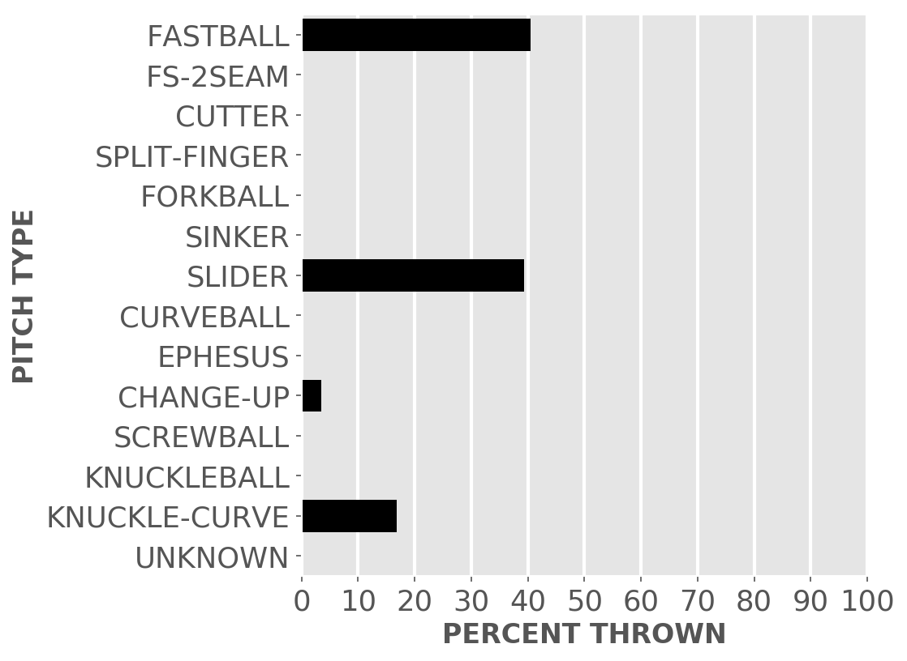
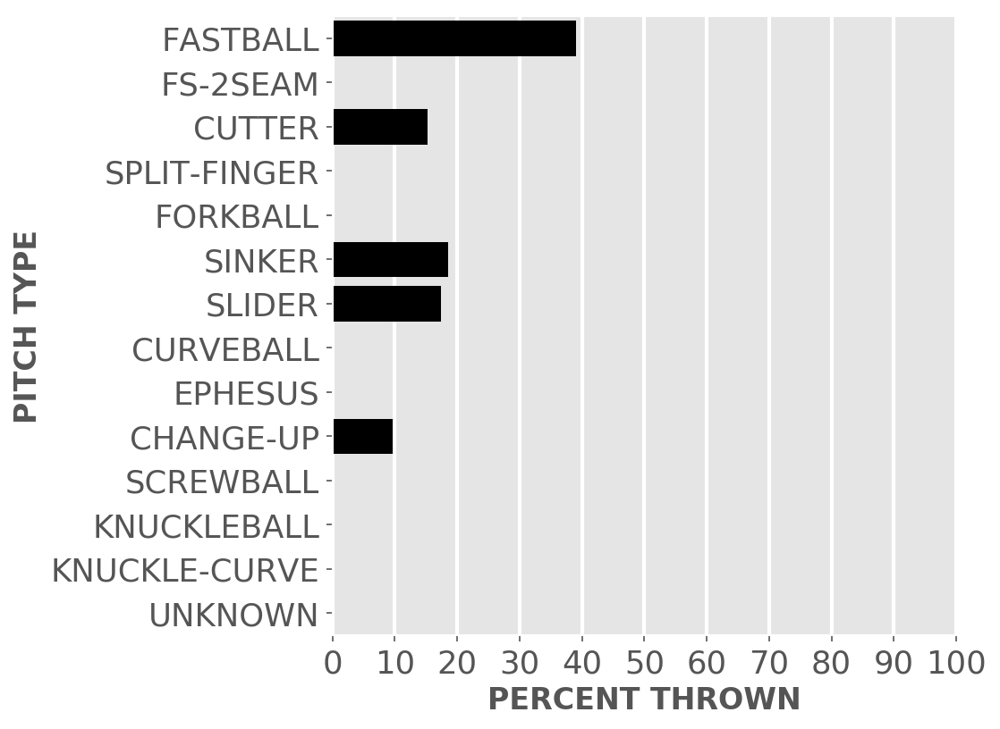
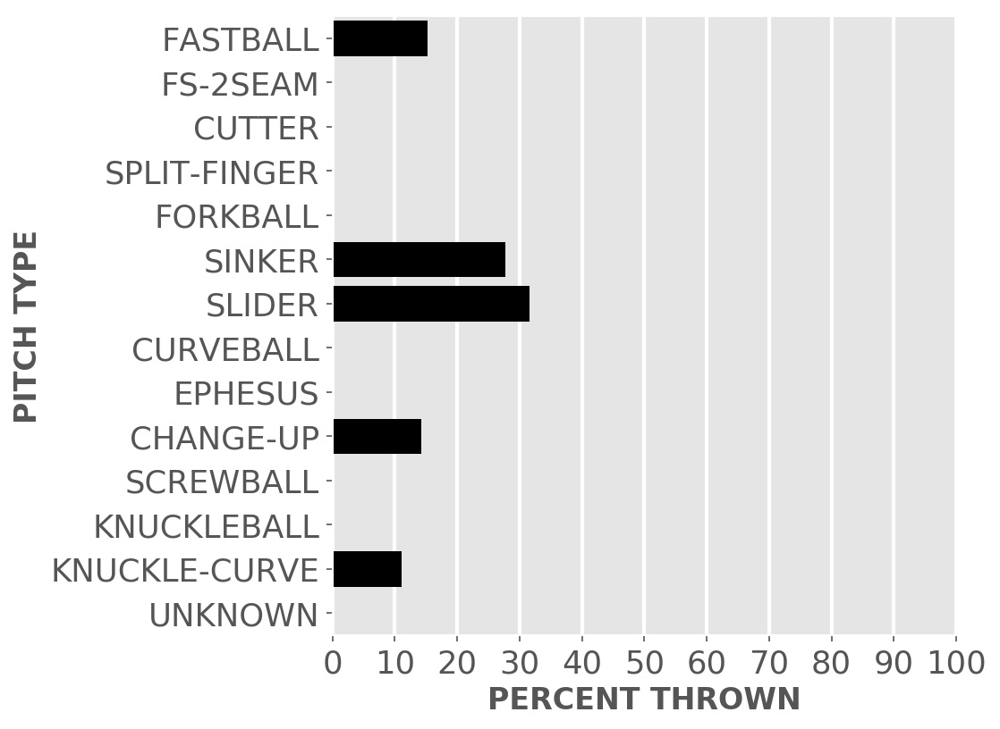
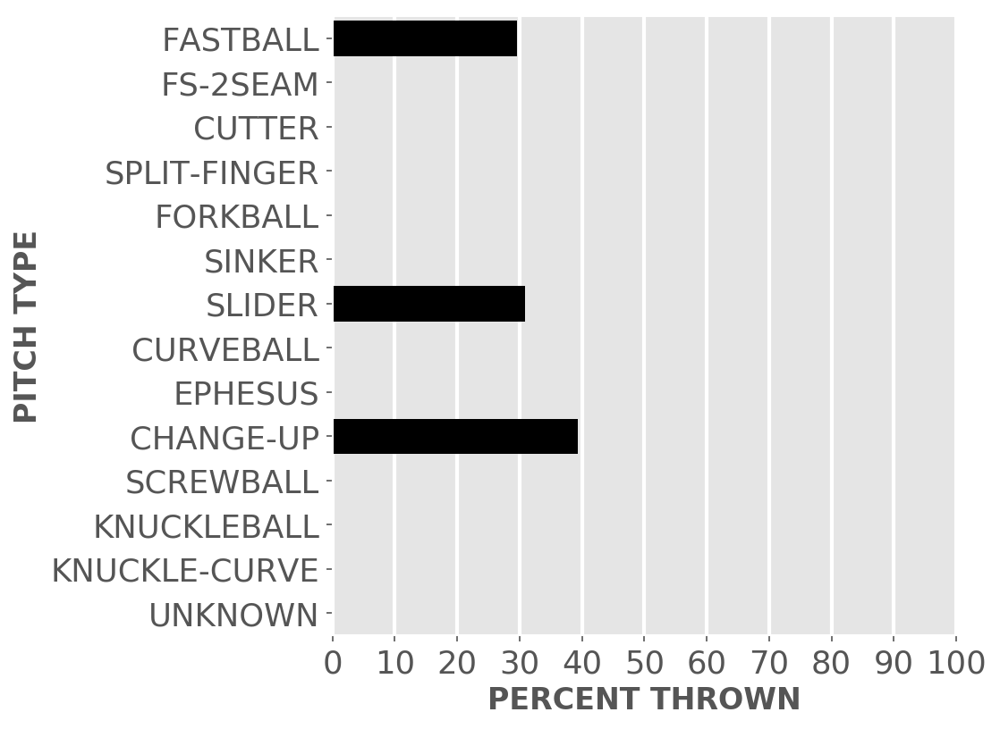
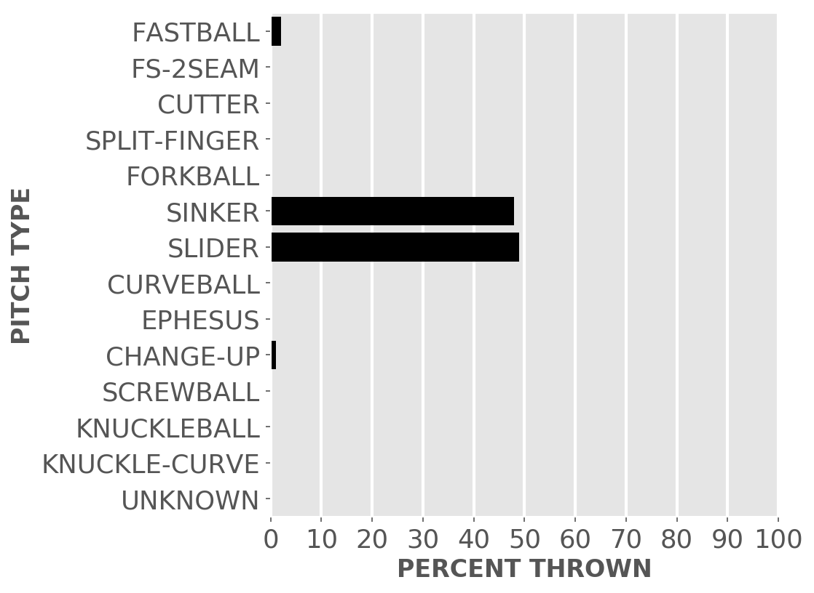

Chicago baseball
White Sox
A little-more-than-casual but not-very-wonky statistical look at the current season
Great expectations for the good guys in black.
Updated Monday, May 1, at 12:40 p.m. Pybaseball gathers these from Baseball-reference.com.
Games
JUMP TO TOP | BATTERS | PITCHERS
On Sunday, Apr 30, the Sox won with a walk-off in a day game at home against the Rays, 12 to 9, in 9 innings. The winning pitcher was Bummer, losing pitcher was Beeks. Save: None.
Next scheduled game: Tuesday, May 2, a game at home with the Twins.
Summary results by team
| Team | Wins | Loses | Avg. Sox runs | Avg. runs against |
|---|---|---|---|---|
| Astros | 2 | 2 | 4.0 | 4.25 |
| Blue Jays | 0 | 3 | 0.67 | 6.67 |
| Giants | 1 | 2 | 5.33 | 10.33 |
| Orioles | 1 | 2 | 4.67 | 6.67 |
| Phillies | 1 | 2 | 3.0 | 4.0 |
| Pirates | 1 | 2 | 6.67 | 6.33 |
| Rays | 1 | 6 | 4.71 | 7.71 |
| Twins | 1 | 2 | 2.67 | 3.33 |
Batters
JUMP TO TOP | GAMES | PITCHERS
Click the link under a player's name to get up-to-speed on a player at bat.
Hanser Alberto #26, 3B
| Status (A = active) | D15 |
| Bats/Throws | R/R |
| Plate appearances | 19 |
| At bats | 19 |
| Hits | 4 |
| Home runs | 1 |
| Batting Avg. | 0.211 |
| Runs | 3 |
| RBI | 4 |
| On-base percent | 0.211 |
| Weighted OBP | 0.248 |
| Slugging % | 0.368 |
| Stolen bases | 0 |
| Caught stealing | 0 |
Other measures
| Weighted runs above avg. (wRAA) | -1.1 |
| Runs Above Replacement (RAR) | -2.2 |
| Fielding RAR | -0.9 |
| Wins above replacement (WAR) | -0.2 |
Tim Anderson #7, SS
| Status (A = active) | D10 |
| Bats/Throws | R/R |
| Plate appearances | 49 |
| At bats | 47 |
| Hits | 14 |
| Home runs | 0 |
| Batting Avg. | 0.298 |

| Runs | 9 |
| RBI | 4 |
| On-base percent | 0.327 |
| Weighted OBP | 0.321 |
| Slugging % | 0.404 |
| Stolen bases | 5 |
| Caught stealing | 0 |
Other measures
| Weighted runs above avg. (wRAA) | 0.1 |
| Runs Above Replacement (RAR) | 3.7 |
| Fielding RAR | 0.0 |
| Wins above replacement (WAR) | 0.4 |
Elvis Andrus #1, SS
| Status (A = active) | A |
| Bats/Throws | R/R |
| Plate appearances | 113 |
| At bats | 102 |
| Hits | 21 |
| Home runs | 0 |
| Batting Avg. | 0.206 |

| Runs | 9 |
| RBI | 9 |
| On-base percent | 0.274 |
| Weighted OBP | 0.237 |
| Slugging % | 0.245 |
| Stolen bases | 4 |
| Caught stealing | 1 |
Other measures
| Weighted runs above avg. (wRAA) | -7.6 |
| Runs Above Replacement (RAR) | -1.1 |
| Fielding RAR | 0.0 |
| Wins above replacement (WAR) | -0.1 |
Andrew Benintendi #23, LF
| Status (A = active) | A |
| Bats/Throws | L/L |
| Plate appearances | 104 |
| At bats | 96 |
| Hits | 27 |
| Home runs | 0 |
| Batting Avg. | 0.281 |

| Runs | 14 |
| RBI | 5 |
| On-base percent | 0.337 |
| Weighted OBP | 0.299 |
| Slugging % | 0.333 |
| Stolen bases | 4 |
| Caught stealing | 0 |
Other measures
| Weighted runs above avg. (wRAA) | -1.7 |
| Runs Above Replacement (RAR) | 1.2 |
| Fielding RAR | -1.2 |
| Wins above replacement (WAR) | 0.1 |
Jake Burger #30, 3B
| Status (A = active) | A |
| Bats/Throws | R/R |
| Plate appearances | 72 |
| At bats | 62 |
| Hits | 15 |
| Home runs | 7 |
| Batting Avg. | 0.242 |

| Runs | 11 |
| RBI | 14 |
| On-base percent | 0.333 |
| Weighted OBP | 0.41 |
| Slugging % | 0.661 |
| Stolen bases | 0 |
| Caught stealing | 0 |
Other measures
| Weighted runs above avg. (wRAA) | 5.4 |
| Runs Above Replacement (RAR) | 8.1 |
| Fielding RAR | 0.2 |
| Wins above replacement (WAR) | 0.8 |
Oscar Colas #22, RF
| Status (A = active) | A |
| Bats/Throws | L/L |
| Plate appearances | 84 |
| At bats | 76 |
| Hits | 16 |
| Home runs | 1 |
| Batting Avg. | 0.211 |
| Runs | 8 |
| RBI | 7 |
| On-base percent | 0.265 |
| Weighted OBP | 0.245 |
| Slugging % | 0.276 |
| Stolen bases | 2 |
| Caught stealing | 1 |
Other measures
| Weighted runs above avg. (wRAA) | -5.1 |
| Runs Above Replacement (RAR) | -3.7 |
| Fielding RAR | -1.1 |
| Wins above replacement (WAR) | -0.4 |
Romy Gonzalez #12, RF
| Status (A = active) | A |
| Bats/Throws | R/R |
| Plate appearances | 36 |
| At bats | 36 |
| Hits | 5 |
| Home runs | 0 |
| Batting Avg. | 0.139 |
| Runs | 2 |
| RBI | 1 |
| On-base percent | 0.139 |
| Weighted OBP | 0.143 |
| Slugging % | 0.194 |
| Stolen bases | 1 |
| Caught stealing | 0 |
Other measures
| Weighted runs above avg. (wRAA) | -5.2 |
| Runs Above Replacement (RAR) | -4.7 |
| Fielding RAR | -1.0 |
| Wins above replacement (WAR) | -0.5 |
Yasmani Grandal #24, C
| Status (A = active) | A |
| Bats/Throws | S/R |
| Plate appearances | 93 |
| At bats | 83 |
| Hits | 20 |
| Home runs | 3 |
| Batting Avg. | 0.241 |

| Runs | 8 |
| RBI | 9 |
| On-base percent | 0.323 |
| Weighted OBP | 0.336 |
| Slugging % | 0.446 |
| Stolen bases | 0 |
| Caught stealing | 0 |
Other measures
| Weighted runs above avg. (wRAA) | 1.3 |
| Runs Above Replacement (RAR) | 1.9 |
| Fielding RAR | -2.3 |
| Wins above replacement (WAR) | 0.2 |
Adam Haseley #51, RF
| Status (A = active) | A |
| Bats/Throws | L/L |
| Plate appearances | 13 |
| At bats | 11 |
| Hits | 6 |
| Home runs | 0 |
| Batting Avg. | 0.545 |

| Runs | 4 |
| RBI | 2 |
| On-base percent | 0.615 |
| Weighted OBP | 0.548 |
| Slugging % | 0.636 |
| Stolen bases | 0 |
| Caught stealing | 0 |
Other measures
| Weighted runs above avg. (wRAA) | 2.4 |
| Runs Above Replacement (RAR) | 2.7 |
| Fielding RAR | -0.2 |
| Wins above replacement (WAR) | 0.3 |
Eloy Jimenez #74, DH
| Status (A = active) | A |
| Bats/Throws | R/R |
| Plate appearances | 88 |
| At bats | 80 |
| Hits | 18 |
| Home runs | 2 |
| Batting Avg. | 0.225 |

| Runs | 8 |
| RBI | 9 |
| On-base percent | 0.295 |
| Weighted OBP | 0.289 |
| Slugging % | 0.35 |
| Stolen bases | 0 |
| Caught stealing | 0 |
Other measures
| Weighted runs above avg. (wRAA) | -2.2 |
| Runs Above Replacement (RAR) | -1.6 |
| Fielding RAR | 0.0 |
| Wins above replacement (WAR) | -0.2 |
Yoan Moncada #10, 3B
| Status (A = active) | D10 |
| Bats/Throws | S/R |
| Plate appearances | 40 |
| At bats | 39 |
| Hits | 12 |
| Home runs | 2 |
| Batting Avg. | 0.308 |

| Runs | 4 |
| RBI | 5 |
| On-base percent | 0.325 |
| Weighted OBP | 0.379 |
| Slugging % | 0.564 |
| Stolen bases | 0 |
| Caught stealing | 0 |
Other measures
| Weighted runs above avg. (wRAA) | 1.9 |
| Runs Above Replacement (RAR) | 3.7 |
| Fielding RAR | 0.5 |
| Wins above replacement (WAR) | 0.4 |
Gavin Sheets #32, DH
| Status (A = active) | A |
| Bats/Throws | L/L |
| Plate appearances | 54 |
| At bats | 47 |
| Hits | 13 |
| Home runs | 2 |
| Batting Avg. | 0.277 |

| Runs | 5 |
| RBI | 8 |
| On-base percent | 0.352 |
| Weighted OBP | 0.335 |
| Slugging % | 0.404 |
| Stolen bases | 0 |
| Caught stealing | 0 |
Other measures
| Weighted runs above avg. (wRAA) | 0.7 |
| Runs Above Replacement (RAR) | 0.6 |
| Fielding RAR | -1.0 |
| Wins above replacement (WAR) | 0.1 |
Lenyn Sosa #50, 2B
| Status (A = active) | A |
| Bats/Throws | R/R |
| Plate appearances | 54 |
| At bats | 53 |
| Hits | 8 |
| Home runs | 1 |
| Batting Avg. | 0.151 |

| Runs | 3 |
| RBI | 3 |
| On-base percent | 0.167 |
| Weighted OBP | 0.18 |
| Slugging % | 0.245 |
| Stolen bases | 0 |
| Caught stealing | 0 |
Other measures
| Weighted runs above avg. (wRAA) | -6.2 |
| Runs Above Replacement (RAR) | -2.0 |
| Fielding RAR | 2.3 |
| Wins above replacement (WAR) | -0.2 |
Andrew Vaughn #25, 1B
| Status (A = active) | A |
| Bats/Throws | R/R |
| Plate appearances | 123 |
| At bats | 106 |
| Hits | 27 |
| Home runs | 3 |
| Batting Avg. | 0.255 |

| Runs | 12 |
| RBI | 20 |
| On-base percent | 0.358 |
| Weighted OBP | 0.351 |
| Slugging % | 0.434 |
| Stolen bases | 0 |
| Caught stealing | 0 |
Other measures
| Weighted runs above avg. (wRAA) | 3.2 |
| Runs Above Replacement (RAR) | 0.5 |
| Fielding RAR | -2.9 |
| Wins above replacement (WAR) | 0.0 |
Seby Zavala #44, C
| Status (A = active) | A |
| Bats/Throws | R/R |
| Plate appearances | 35 |
| At bats | 33 |
| Hits | 6 |
| Home runs | 1 |
| Batting Avg. | 0.182 |

| Runs | 4 |
| RBI | 2 |
| On-base percent | 0.229 |
| Weighted OBP | 0.236 |
| Slugging % | 0.303 |
| Stolen bases | 1 |
| Caught stealing | 0 |
Other measures
| Weighted runs above avg. (wRAA) | -2.4 |
| Runs Above Replacement (RAR) | 0.0 |
| Fielding RAR | 0.4 |
| Wins above replacement (WAR) | 0.0 |
Pitchers
Click the link under a player's name to get acquainted with who's on the mound. Click here for a description of these stats and more.
Hanser Alberto #26, 3B
| Status (A = active) | D15 |
| Bats/Throws | R/R |
| Wins | 0 |
| Losses | 0 |
| ERA | 21.6 |
| Caught stealing | 0 |
| Complete games | 0 |
| Shutouts | 0 |
| Saves | 0 |
| Blown saves | 0 |
Pitch types
Fastball = Four Seam and Unclassified Fastballs; FS-2seam = Two Seam Fastballs; Ephesuses are a really slow ball
| Average innings pitched | 0.6 |
| Strikeouts per 9 innings | 5.4 |
| Walks per 9 innings | 5.4 |
| Walks, hits per inning (WHIP) | 4.2 |
| Percent left on base | 53.6 |
| Percent first pitch strike | 58.3 |
Other measures
| Avg. run support | 3.0 |
| Opponents batting average | 0.545 |
| Batting avg. on balls in play | 0.556 |
| Fielding independent pitching | 11.78 |
| Win probability added (WPA) | 0.0 |
| Runs above replacement | -0.5 |
| WAR | -0.1 |
Aaron Bummer #39, P
| Status (A = active) | A |
| Bats/Throws | L/L |
| Wins | 1 |
| Losses | 1 |
| ERA | 9.64 |
| Caught stealing | 0 |
| Complete games | 0 |
| Shutouts | 0 |
| Saves | 0 |
| Blown saves | 1 |
Pitch types

Fastball = Four Seam and Unclassified Fastballs; FS-2seam = Two Seam Fastballs; Ephesuses are a really slow ball
| Average innings pitched | 0.7 |
| Strikeouts per 9 innings | 8.68 |
| Walks per 9 innings | 6.75 |
| Walks, hits per inning (WHIP) | 1.93 |
| Percent left on base | 47.4 |
| Percent first pitch strike | 60.9 |
Other measures
| Avg. run support | 11.0 |
| Opponents batting average | 0.289 |
| Batting avg. on balls in play | 0.379 |
| Fielding independent pitching | 4.03 |
| Win probability added (WPA) | -0.7 |
| Runs above replacement | 0.8 |
| WAR | 0.1 |
Dylan Cease #84, P
| Status (A = active) | A |
| Bats/Throws | R/R |
| Wins | 2 |
| Losses | 1 |
| ERA | 4.15 |
| Caught stealing | 6 |
| Complete games | 0 |
| Shutouts | 0 |
| Saves | 0 |
| Blown saves | 0 |
Pitch types
Fastball = Four Seam and Unclassified Fastballs; FS-2seam = Two Seam Fastballs; Ephesuses are a really slow ball
| Average innings pitched | 5.0 |
| Strikeouts per 9 innings | 10.98 |
| Walks per 9 innings | 4.45 |
| Walks, hits per inning (WHIP) | 1.38 |
| Percent left on base | 64.6 |
| Percent first pitch strike | 63.8 |
Other measures
| Avg. run support | 16.0 |
| Opponents batting average | 0.221 |
| Batting avg. on balls in play | 0.293 |
| Fielding independent pitching | 4.11 |
| Win probability added (WPA) | -0.34 |
| Runs above replacement | 4.9 |
| WAR | 0.5 |
Mike Clevinger #52, P
| Status (A = active) | A |
| Bats/Throws | R/R |
| Wins | 2 |
| Losses | 2 |
| ERA | 4.6 |
| Caught stealing | 6 |
| Complete games | 0 |
| Shutouts | 0 |
| Saves | 0 |
| Blown saves | 0 |
Pitch types

Fastball = Four Seam and Unclassified Fastballs; FS-2seam = Two Seam Fastballs; Ephesuses are a really slow ball
| Average innings pitched | 4.9 |
| Strikeouts per 9 innings | 7.98 |
| Walks per 9 innings | 4.6 |
| Walks, hits per inning (WHIP) | 1.6 |
| Percent left on base | 81.0 |
| Percent first pitch strike | 55.6 |
Other measures
| Avg. run support | 15.0 |
| Opponents batting average | 0.271 |
| Batting avg. on balls in play | 0.31 |
| Fielding independent pitching | 5.57 |
| Win probability added (WPA) | 0.07 |
| Runs above replacement | 0.7 |
| WAR | 0.1 |
Jake Diekman #55, P
| Status (A = active) | A |
| Bats/Throws | R/L |
| Wins | 0 |
| Losses | 1 |
| ERA | 7.94 |
| Caught stealing | 0 |
| Complete games | 0 |
| Shutouts | 0 |
| Saves | 0 |
| Blown saves | 1 |
Pitch types
Fastball = Four Seam and Unclassified Fastballs; FS-2seam = Two Seam Fastballs; Ephesuses are a really slow ball
| Average innings pitched | 0.9 |
| Strikeouts per 9 innings | 8.74 |
| Walks per 9 innings | 10.32 |
| Walks, hits per inning (WHIP) | 2.12 |
| Percent left on base | 44.2 |
| Percent first pitch strike | 43.1 |
Other measures
| Avg. run support | 1.0 |
| Opponents batting average | 0.244 |
| Batting avg. on balls in play | 0.303 |
| Fielding independent pitching | 6.03 |
| Win probability added (WPA) | -0.65 |
| Runs above replacement | -1.4 |
| WAR | -0.1 |
Lucas Giolito #27, P
| Status (A = active) | A |
| Bats/Throws | R/R |
| Wins | 1 |
| Losses | 2 |
| ERA | 4.15 |
| Caught stealing | 6 |
| Complete games | 0 |
| Shutouts | 0 |
| Saves | 0 |
| Blown saves | 0 |
Pitch types

Fastball = Four Seam and Unclassified Fastballs; FS-2seam = Two Seam Fastballs; Ephesuses are a really slow ball
| Average innings pitched | 5.7 |
| Strikeouts per 9 innings | 8.83 |
| Walks per 9 innings | 1.56 |
| Walks, hits per inning (WHIP) | 1.18 |
| Percent left on base | 71.1 |
| Percent first pitch strike | 57.8 |
Other measures
| Avg. run support | 16.0 |
| Opponents batting average | 0.255 |
| Batting avg. on balls in play | 0.313 |
| Fielding independent pitching | 3.79 |
| Win probability added (WPA) | -0.36 |
| Runs above replacement | 7.0 |
| WAR | 0.7 |
Kendall Graveman #49, P
| Status (A = active) | A |
| Bats/Throws | R/R |
| Wins | 1 |
| Losses | 2 |
| ERA | 5.56 |
| Caught stealing | 0 |
| Complete games | 0 |
| Shutouts | 0 |
| Saves | 0 |
| Blown saves | 0 |
Pitch types

Fastball = Four Seam and Unclassified Fastballs; FS-2seam = Two Seam Fastballs; Ephesuses are a really slow ball
| Average innings pitched | 0.9 |
| Strikeouts per 9 innings | 9.53 |
| Walks per 9 innings | 3.97 |
| Walks, hits per inning (WHIP) | 1.32 |
| Percent left on base | 70.3 |
| Percent first pitch strike | 66.0 |
Other measures
| Avg. run support | 6.0 |
| Opponents batting average | 0.233 |
| Batting avg. on balls in play | 0.25 |
| Fielding independent pitching | 6.56 |
| Win probability added (WPA) | -0.22 |
| Runs above replacement | -2.2 |
| WAR | -0.2 |
Joe Kelly #17, P
| Status (A = active) | A |
| Bats/Throws | R/R |
| Wins | 0 |
| Losses | 1 |
| ERA | 7.71 |
| Caught stealing | 0 |
| Complete games | 0 |
| Shutouts | 0 |
| Saves | 0 |
| Blown saves | 0 |
Pitch types
Fastball = Four Seam and Unclassified Fastballs; FS-2seam = Two Seam Fastballs; Ephesuses are a really slow ball
| Average innings pitched | 0.8 |
| Strikeouts per 9 innings | 13.5 |
| Walks per 9 innings | 1.93 |
| Walks, hits per inning (WHIP) | 1.5 |
| Percent left on base | 53.6 |
| Percent first pitch strike | 66.7 |
Other measures
| Avg. run support | 8.0 |
| Opponents batting average | 0.3 |
| Batting avg. on balls in play | 0.417 |
| Fielding independent pitching | 3.81 |
| Win probability added (WPA) | 0.26 |
| Runs above replacement | 0.4 |
| WAR | 0.0 |
Michael Kopech #34, P
| Status (A = active) | A |
| Bats/Throws | R/R |
| Wins | 0 |
| Losses | 3 |
| ERA | 7.01 |
| Caught stealing | 5 |
| Complete games | 0 |
| Shutouts | 0 |
| Saves | 0 |
| Blown saves | 0 |
Pitch types

Fastball = Four Seam and Unclassified Fastballs; FS-2seam = Two Seam Fastballs; Ephesuses are a really slow ball
| Average innings pitched | 5.0 |
| Strikeouts per 9 innings | 9.47 |
| Walks per 9 innings | 5.61 |
| Walks, hits per inning (WHIP) | 1.71 |
| Percent left on base | 74.7 |
| Percent first pitch strike | 58.0 |
Other measures
| Avg. run support | 9.0 |
| Opponents batting average | 0.277 |
| Batting avg. on balls in play | 0.303 |
| Fielding independent pitching | 7.44 |
| Win probability added (WPA) | -0.6 |
| Runs above replacement | -4.0 |
| WAR | -0.4 |
Jimmy Lambert #58, P
| Status (A = active) | A |
| Bats/Throws | R/R |
| Wins | 1 |
| Losses | 1 |
| ERA | 6.92 |
| Caught stealing | 0 |
| Complete games | 0 |
| Shutouts | 0 |
| Saves | 0 |
| Blown saves | 0 |
Pitch types

Fastball = Four Seam and Unclassified Fastballs; FS-2seam = Two Seam Fastballs; Ephesuses are a really slow ball
| Average innings pitched | 0.9 |
| Strikeouts per 9 innings | 13.15 |
| Walks per 9 innings | 5.54 |
| Walks, hits per inning (WHIP) | 1.85 |
| Percent left on base | 61.9 |
| Percent first pitch strike | 51.6 |
Other measures
| Avg. run support | 5.0 |
| Opponents batting average | 0.291 |
| Batting avg. on balls in play | 0.375 |
| Fielding independent pitching | 6.54 |
| Win probability added (WPA) | -0.72 |
| Runs above replacement | -2.2 |
| WAR | -0.2 |
Reynaldo Lopez #40, P
| Status (A = active) | A |
| Bats/Throws | R/R |
| Wins | 0 |
| Losses | 2 |
| ERA | 8.76 |
| Caught stealing | 0 |
| Complete games | 0 |
| Shutouts | 0 |
| Saves | 3 |
| Blown saves | 3 |
Pitch types

Fastball = Four Seam and Unclassified Fastballs; FS-2seam = Two Seam Fastballs; Ephesuses are a really slow ball
| Average innings pitched | 0.9 |
| Strikeouts per 9 innings | 13.86 |
| Walks per 9 innings | 4.38 |
| Walks, hits per inning (WHIP) | 1.7 |
| Percent left on base | 64.3 |
| Percent first pitch strike | 63.2 |
Other measures
| Avg. run support | 4.0 |
| Opponents batting average | 0.294 |
| Batting avg. on balls in play | 0.37 |
| Fielding independent pitching | 7.03 |
| Win probability added (WPA) | -0.97 |
| Runs above replacement | -4.0 |
| WAR | -0.4 |
Lance Lynn #33, P
| Status (A = active) | A |
| Bats/Throws | S/R |
| Wins | 0 |
| Losses | 4 |
| ERA | 7.16 |
| Caught stealing | 6 |
| Complete games | 0 |
| Shutouts | 0 |
| Saves | 0 |
| Blown saves | 0 |
Pitch types

Fastball = Four Seam and Unclassified Fastballs; FS-2seam = Two Seam Fastballs; Ephesuses are a really slow ball
| Average innings pitched | 5.4 |
| Strikeouts per 9 innings | 11.57 |
| Walks per 9 innings | 4.13 |
| Walks, hits per inning (WHIP) | 1.59 |
| Percent left on base | 64.6 |
| Percent first pitch strike | 73.6 |
Other measures
| Avg. run support | 17.0 |
| Opponents batting average | 0.28 |
| Batting avg. on balls in play | 0.354 |
| Fielding independent pitching | 5.47 |
| Win probability added (WPA) | -0.93 |
| Runs above replacement | 1.5 |
| WAR | 0.1 |
Keynan Middleton #99, P
| Status (A = active) | A |
| Bats/Throws | R/R |
| Wins | 0 |
| Losses | 0 |
| ERA | 3.86 |
| Caught stealing | 0 |
| Complete games | 0 |
| Shutouts | 0 |
| Saves | 0 |
| Blown saves | 0 |
Pitch types
Fastball = Four Seam and Unclassified Fastballs; FS-2seam = Two Seam Fastballs; Ephesuses are a really slow ball
| Average innings pitched | 0.8 |
| Strikeouts per 9 innings | 16.71 |
| Walks per 9 innings | 3.86 |
| Walks, hits per inning (WHIP) | 1.71 |
| Percent left on base | 84.9 |
| Percent first pitch strike | 62.5 |
Other measures
| Avg. run support | 0.0 |
| Opponents batting average | 0.31 |
| Batting avg. on balls in play | 0.533 |
| Fielding independent pitching | 2.81 |
| Win probability added (WPA) | -0.05 |
| Runs above replacement | 1.2 |
| WAR | 0.1 |
Gregory Santos #60, P
| Status (A = active) | A |
| Bats/Throws | R/R |
| Wins | 0 |
| Losses | 0 |
| ERA | 1.88 |
| Caught stealing | 0 |
| Complete games | 0 |
| Shutouts | 0 |
| Saves | 0 |
| Blown saves | 0 |
Pitch types
Fastball = Four Seam and Unclassified Fastballs; FS-2seam = Two Seam Fastballs; Ephesuses are a really slow ball
| Average innings pitched | 1.1 |
| Strikeouts per 9 innings | 10.05 |
| Walks per 9 innings | 3.14 |
| Walks, hits per inning (WHIP) | 1.47 |
| Percent left on base | 82.6 |
| Percent first pitch strike | 62.5 |
Other measures
| Avg. run support | 5.0 |
| Opponents batting average | 0.281 |
| Batting avg. on balls in play | 0.39 |
| Fielding independent pitching | 2.62 |
| Win probability added (WPA) | 0.04 |
| Runs above replacement | 2.4 |
| WAR | 0.2 |
JUMP TO TOP